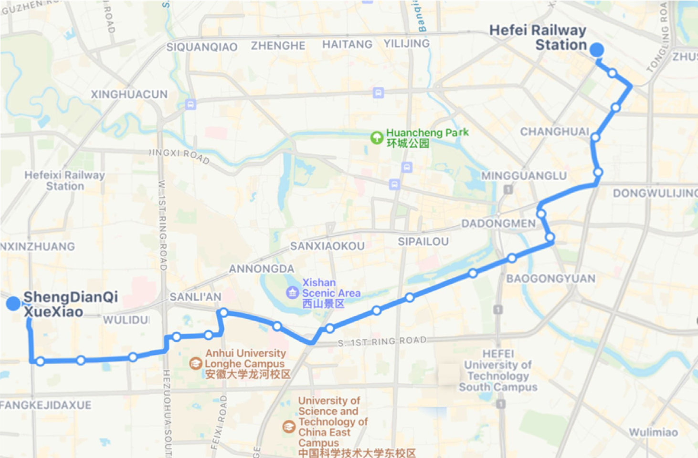

Lectura 2: Proyecto del semestre#
Optimización de la Integración de Programación y Horarios de Autobuses Utilizando Modelos de Flujo de Redes#
Los sistemas de transporte público urbano son cruciales para reducir la congestión del tráfico, disminuir las emisiones de carbono y proporcionar opciones de movilidad eficientes en áreas metropolitanas. Sin embargo, la programación eficiente de los horarios y la asignación de autobuses sigue siendo un desafío complejo debido a restricciones como la cantidad de vehículos con que se cuenta, restricciones de los operadores de transporte y la demanda variable de pasajeros.
Este proyecto de investigación tiene como objetivo abordar el problema de la integración de la programación y los horarios de los autobuses utilizando modelos avanzados de flujo de redes. Al hacerlo, el proyecto busca mejorar la eficiencia operativa de los sistemas de transporte público, reducir costos y mejorar la calidad del servicio para los pasajeros.

Funciones Objetivo#
Algunas funciones objetivo que pueden considerarse de forma individual o integrada para el problema son:
Minimizar los costos totales asociados con la operación de la flota de autobuses, incluidos los costos fijos, los costos variables y los costos de trayectos sin pasajeros.
Maximizar el beneficio obtenido de realizar los viajes de servicio, considerando los costos operativos.
Minimizar el número de autobuses necesarios para satisfacer la demanda del servicio.
Maximizar la satisfacción del pasajero reduciendo los tiempos de espera y asegurando intervalos regulares de servicio.
Posibles Restricciones#
Para desarrollar un modelo realista y efectivo, se pueden considerar las siguientes restricciones:
Cada viaje de servicio puede ser realizado por como máximo un autobús.
Mantener intervalos mínimos y máximos entre viajes consecutivos.
Los autobuses deben comenzar y terminar sus rutas en el mismo depósito.
Asegurar que los autobuses cumplan con los horarios de salida y llegada dentro del horizonte de planificación.
Incluir trayectos sin pasajeros y los tiempos de espera necesarios en los puntos terminales.
Mantener una frecuencia mínima de viajes de servicio para cada línea de autobús para asegurar la calidad del servicio.
Resultados Esperados#
Desarrollar horarios de autobuses eficientes que minimicen los costos operativos y maximicen la calidad del servicio.
Demostrar una reducción en el tamaño de la flota y los costos operativos manteniendo o mejorando los niveles de servicio.
Proporcionar horarios que reduzcan los tiempos de espera y aseguren un servicio confiable y regular para los pasajeros.
Bibliografía mínima sugerida#
Optimizing the Scheduling of Electrified Public Transport System in Malta